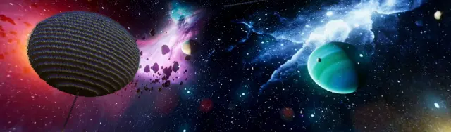
感谢_hhhxiao提供的源码、插件、文章查虫等支持。
感谢Rufus提供的资料、数据等支持。
感谢36_official、JX67等对于生成机制的早期探索与整理。
感谢origin_0110、panda4994万岁、AlanSchezar、navynexus、Kenneth Du等前辈对于生物农场的探索。
感谢其他大佬提供的无偿帮助。
首先啊再强调一下这是基岩版的专栏，讲的是刷怪塔、动物农场一类的，和刷铁机、刷花机没关系。其次啊写这行字的时候最新正式版还在1.16，测试版暂且不考虑，这篇文章最适用的版本为1.16.40。如果将来过时的太严重，可能会攒一攒发个补丁。然后啊本人水平实在有限，这东西又很复杂，文笔和记性也不是很好，难免会出现艰涩难懂或者差错的情况，还望多多包涵，请以游戏实践为主。本文大部分理论的基础来源于硝酸银翻阅的代码，部分理论为大量观测事实经过合理的推导、整理、总结得出，可能与源码矛盾。
文中所引用的资料，完整版可以在我群群文件找到：673386237。
生成流程大致如下图：
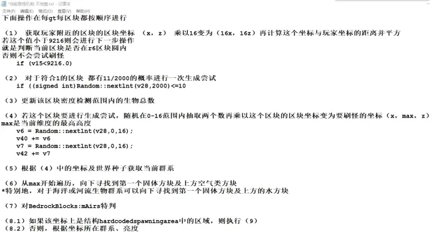
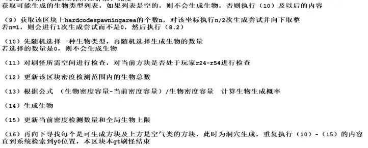
看不懂？其实里面很多看懂了也没用，而且还有点过时（如13）。整个流程大致可以分为下面几个部分。
首先会选择一个较大的范围，范围中的区块每个游戏刻都有11/2000（0.55%，平均而言一个区块一小时会进行396次生成尝试）的概率执行生成尝试。如果该区块执行生成尝试，则更新该区块密度检测内的生物总数，在这个区块随机选择一个x与z坐标，从这一格的建筑上限遍历至建筑下限，找到第一个可生成方块以及上面的空气类方块。
进行结构生成：检查该区块是否包含硬编码生成区域（hardcoded spawning area，以下简称hsa），如果有则获取该区块中has生成点个数，随机抽一半进行生成，如果个数为奇数则向下取整，除非个数为1则选择该点生成。根据亮度等条件获取可能生成的生物列表。
进行露天生成：根据原先选择的生成点所在生物群系、高度、亮度、难度、生成类型等条件获取生物列表。
两种生成都会从列表中，随机选择一种生物，任意一种列表中的生物的生成概率计算方法为：该生物权重/该列表的总权重。选定生物后随机选择生成的数量（部分生物一次一只）。再对于生成点的空间进行检查，对于是否在生成范围内进行检查（部分生物还有其他的检查）。通过后更新密度检测数量，如果成群生成存在溢出则溢出部分不生成（比如上限还剩1，但这次需要生成3只，则只会生成1只）。生成生物。更新密度检测和全局生物上限。
接着向下寻找可生成的方块以及上面的空气类方块。这时为洞穴生成。不会再次进行结构生成。其他和第一次差不多。一直遍历到建筑下限，本次生成结束。
整个流程差不多就是这样，可以看到基岩版包括动物、怪物等所有的生成都是共用一套机制，也就意味着一次生成可能会同时刷出动物、怪物、结构生成的生物。并且生物生成的概率以及是否生成取决于该生物在列表中的权重。也没有生成势、游走刷怪、区块难度等概念。这些都是与Java迥异的地方，相比而言基岩版的生成机制可以说是非常简陋。
露天生成与洞穴生成：从上文了解到，一次生成往往都是从上往下尝试复数次。第一次尝试因为通常处于地表，所以被称为露天生成，与之相对的在露天生成以后的就是洞穴生成。露天生成只有一次，洞穴生成可以是复数次。两者的主要区别在于可能生成的生物列表（如部分生物只会露天生成）和上限（露天上限与洞穴上限）不同。有关伪露天的一点，通常情况下，一个可生成方块上的尝试是否成功，都会占用一次露天生成，而伪露天其实就是让一个本该有生成尝试的方块失去生成尝试，也就是让尝试“跳过去”，因为没有执行露天生成从而让下面本该是洞穴生成的方块变成露天生成，这个操作在过去可以跳过复数层方块，在1.16.40中机制修改只能跳过特定方块，一般用作遮光。
结构生成与成群生成：上文说的露天生成和洞穴生成都可以归类于成群生成。结构生成和成群生成会同时执行，有结构的区块并不是说不会生成其他生物了。成群生成的特点不是成群，而是非定点，可能在一个区块的任意位置生成，而结构生成是定点生成，只能在一个区块的特定位置内生成。如下图是下界要塞的结构生成的生成点的范围。
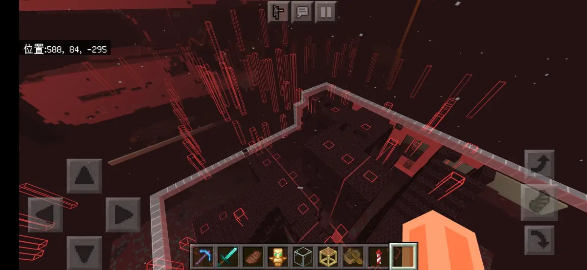
可以看到，生成范围并不是一个点，而是一个纵向的范围。在这个范围内，以最上方的可生成方块作为生成点。包含结构生成的结构共有四种，分别为女巫小屋、掠夺者前哨站（哨塔）、海底神殿和下界要塞（地狱堡垒）。如果一个结构垮了区块，则每个包含结构的区块都有hsa，都有一个生成点。一般来说生成点的范围（也就是上图那个框）在结构的几何中心，但是如果该结构垮了区块，则认为被区块分割成了复数个结构，生成点同样在这些小结构的几何中心，如果边长是偶数则向东南偏移。其中女巫小屋和海底神殿，生成的位置相对固定，具体来说就是女巫小屋不可能垮区块，海底神殿固定25生成点。一个区块内不可能同时生成两个不同的结构，比如不可能哨塔刷在女巫小屋上，结构间的都有一个最小的间隔，如两海底神殿的中心距离不小于96格。
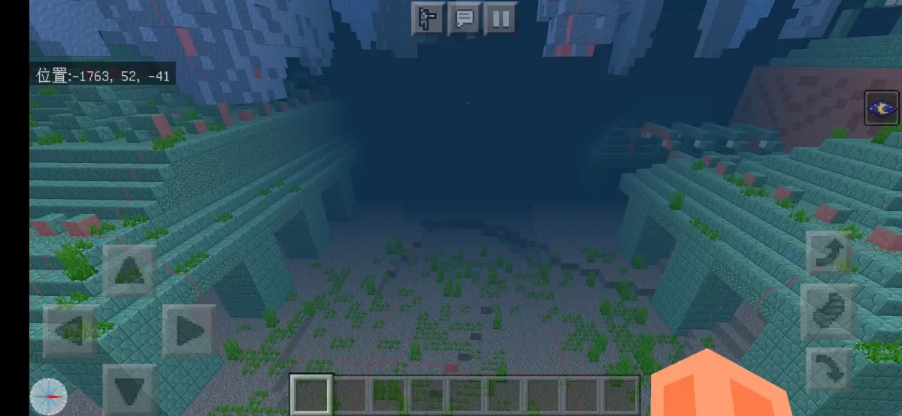
上文提到，结构生成是以生成尝试为基础，因此，一个区块如果全部挖到基岩并铺上地毯，只保留一个结构生成的生成点，那么这个效率理论上说会下降到理想情况下的1/16²，因为其他地方的生成尝试都失败了，自然也就不会执行结构生成。
结构生成实际上与洞穴生成很相似，除掠夺者有单独的上限外，其他的结构生成的生物都计入洞穴上限，也受洞穴上限影响，但通常海底神殿周围的洞穴全是水不会生成生物也就不必担心这个问题。
成群生成可根据生成点的方块（空气、岩浆、水）和位置（露天与洞穴）再细分为6种生成类型。其中岩浆洞穴生成只有炽足兽，水中露天生成主要是溺尸和鱼类。水中洞穴生成在1.17可以生成蝾螈和发光鱿鱼。这六者的区别主要是生物列表不同。
生成范围：生成范围是指能让生物生成的方块的范围，生成范围在不同版本被多次调整，1.16.40正式版的生成范围如下图。
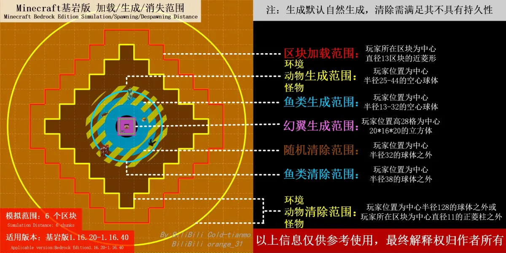
最新正式版的生成范围较复杂，模拟距离为4时，与1.16.40一致。4以上时，主要是两个范围的交集，一个是以玩家为中心r25-r128的范围，另一个由模拟距离决定，模拟距离越大范围越大，模拟距离4到12的生成范围详细见下图。特别的，鱼的生成范围是以r13为起点，幻翼的生成范围是一个在玩家上方，中心距离28格，20*16*20的立方体。
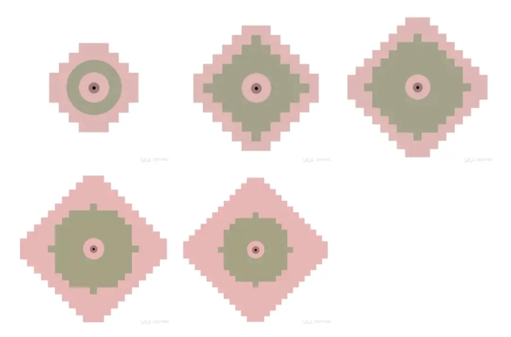
清除机制：在1.16以前基岩版存在过一些生物具有清除机制，比如溺尸，至少需要30秒无行为和符合其他条件后才会清除，关于溺尸的机制不能说是效果微乎其微可以说是约等于没有。这里主要讲的是1.16加入、适用于大部分生物的清除机制。清除机制主要分为两种，对象均为不具备永久性的生物（想要生物具有永久性可以给它一个东西或者命名）。分为立即清除和随机清除，立即清除就是生物超过玩家一定距离立即清除，在1.16.40和1.16.100，模拟距离为4时怪物超过r44立即清除，模拟距离为6到12时，超过r128立即清除，而1.16.40还有几个立即清除的范围见上上图。随机清除就是，在生物生成30s后，距离玩家r32格外的生物每gt有1/800的概率消失（半衰期20s确信）。
上限：众所周知，生物刷到一定地步后就不会生成了，这是因为达到了上限。上限的检测分为两种，一种是全局生物上限检测，全局上限为200，所有加载的区块中的生物都会计入这个上限，会计入的生物除了生成出的生物如豹猫、蝙蝠、僵尸、鱼等，其他很多生物也会计入，如繁殖的生物、刷怪笼生成的生物、刷铁机的铁傀儡、村民、蜜蜂、地狱门里的猪人等等。除了全局上限检测以外的都是密度上限检测。密度检测会检测以生成点所在的区块为中心，9*9区块范围内所有的生物，无论区块是否加载。密度检测分为很多个上限，参考下图。一个生物可能会占用一个全局上限和一到两个密度上限，任何一个上限满了对应的生物都不会生成。比如一只露天生成的苦力怕将要生成，需要全局上限、主世界怪物露天密度上限和苦力怕单独的密度检测上限均有空缺，且生成后会同时占用这三个上限。特别的僵尸村民不占用任何上限（可能是bug）但上限满了还是不会刷，蜘蛛骑士等骑士部分不计入上限。所有结构生成的生物都计入对应维度的洞穴上限，但当对应维度的洞穴上限满了以后，仍会生成一只，可认为对于结构生成来说洞穴上限为n+1。生物死亡的动画，也就是生物死后变成尸体时仍会计入对应的洞穴上限。生物占用的上限在生物生成后就固定了，除了生物死亡、被清除或者离开检测范围等，上限不会消失，也不会因为地下的生物到了地表就改变类型。每个上限的容量可以认为是固定的，但是在最新版本mj又有微操，部分生物的上限由模拟距离决定，等这波稳定后再细说。
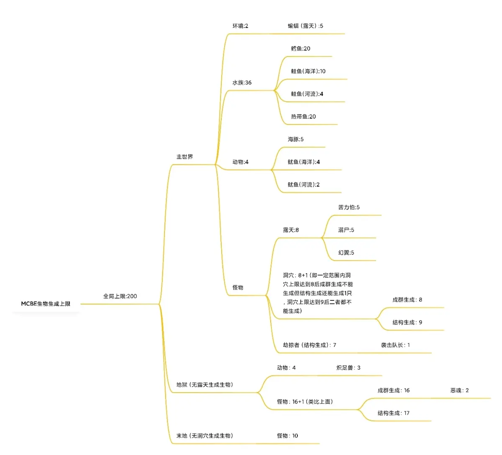
权重和成群：除了上文提到的生物生成的概率取决于权重的占比，生物是否生成取决于是否在列表中，比如说僵尸不能在高亮度环境下生成也是因为高亮度环境没有僵尸的权重。部分生物只在特点高度生成也是因为在其他高度没有权重（除了史莱姆）。决定权重的有很多变量，有亮度、高度、难度、生物群系、生成类型。
而成群就是决定生成什么生物后，再决定生成几只，部分情况下生物只可能生成一只。如果成群的数量是2到4，那么生成2只、3只和4只的概率是相同的。
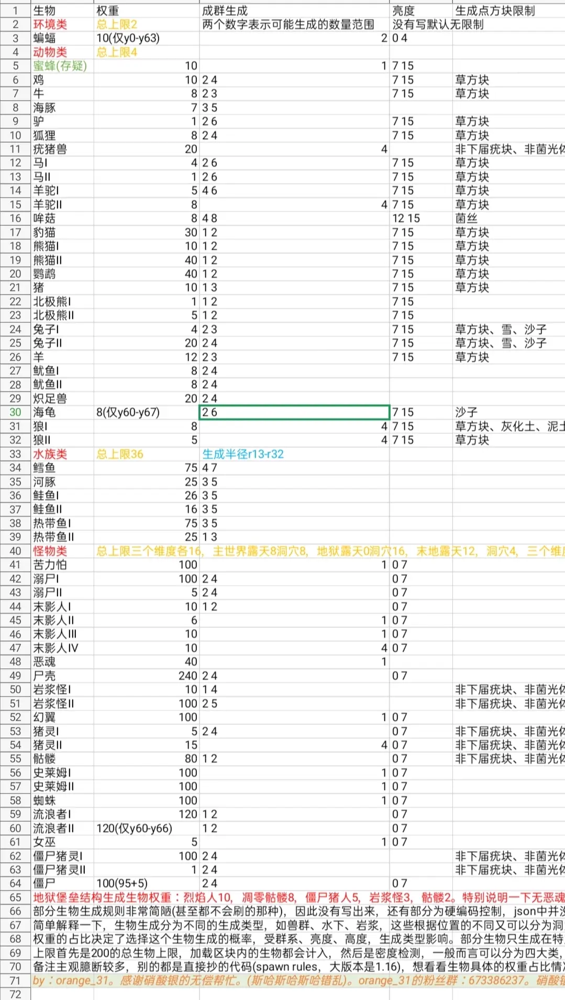
生成点：从游戏机制的层面来讲，生成点指的是被机制初步抽中可生成生物的地方，包含一个可生成方块（例如石头、冰等，特别的基岩、屏障和隐形基岩也可以产生生成尝试但生物不会在上面生成）和一个空气类方块，空气类方块共有三种，为空气、水和岩浆，这两类方块缺少任意一个都不会生成生物。当找到一个可生成方块后，会从这个方块的上一格出发，向上寻找空气类方块，但这个寻找会被一些阻碍生成的方块打断从而认为不是生成点导致生成失败。
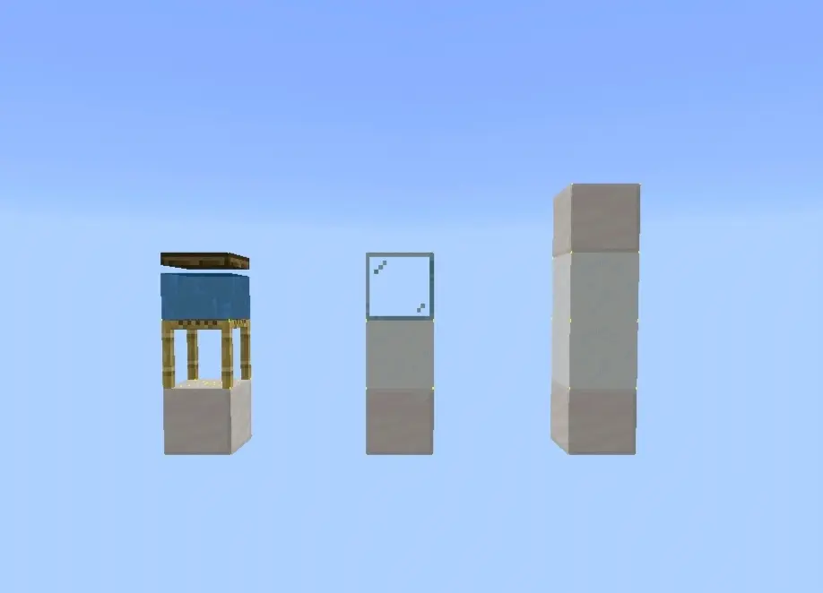
生成点也可以指生物实际生成的坐标。理想情况下，生物生成的位置在可生成方块上一格，浮点坐标为0的地方，也就是方块表面的西北角。但实际上浮点坐标常常会有一个微小的偏差，并且这个误差与生成点的坐标有关，会偏向x或z坐标较大的一边，如果生物生成在方块中，实际生成的位置会产生偏移。
（x坐标增加的方向为东方，z坐标增加的方向为南方）
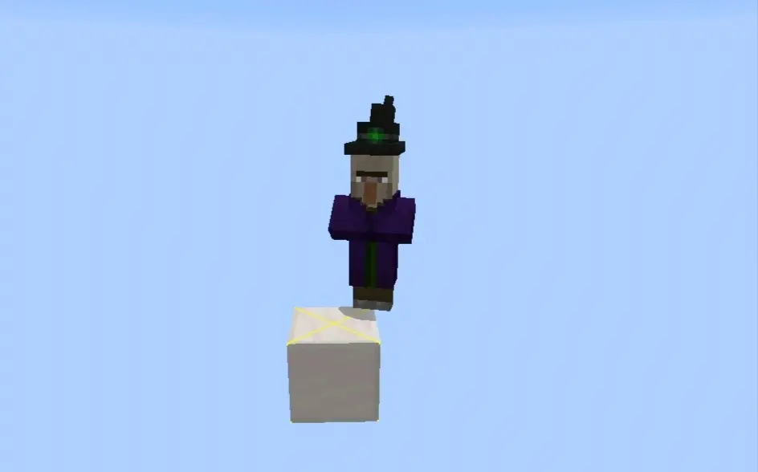
方块类型：方块这理论套源码里面没有什么支持的地方，所以只能潦草总结一下客观事实，总之凑合用也差不多得了。僵尸之所以可以刷在石头上而不是树叶上，可以刷在头部有玻璃的地方，而不能刷在头部有活板门的地方，可以刷在冰上而不是岩浆块上，都是因为方块的属性不同对生成产生的不同效果。方块的属性大致可以分为这么几类：是否可以产生生成尝试、是否遮挡天空光、是否遮挡光源光、是否可以作为特定生物的生成点（如羊只能生成在草方块上）、是否可以阻止特定的生物在上方生成（如疣猪兽不会生成在地狱疣块上）、是否为基岩类方块等等。
其中下面着重讲解一下关于是否阻碍生成这块。可以分别以空气、雪、玻璃和石头举例。石头显然在任何位置与生物的碰撞箱接触都会阻碍生成，而玻璃和雪片则相反，因此可以把石头这类分为固体方块（SolidBlcok），而玻璃和雪片则属于非固体方块。而玻璃又和空气与雪不同，玻璃会阻碍生成点的判定。所有不阻碍生成的方块见往期专栏，需要注意这篇文中部分方块虽然不阻碍生成但不能作为生成点。
生成空间检查：生成空间检查主要就是检查与生物重合的方块。有两种，第一种是与生物的碰撞箱重合的每一格（比如苦力怕会检测2*2*2的范围，末影人检测2*3*2，蜘蛛检测2*1*2），第二种是与生物的碰撞箱重合的方块的碰撞箱。如果第一种没有任何固体方块第二种就会跳过，如果有则还会检查第二种。因此，具体来说挤压刷怪塔不能加任何固体方块来限制其他生物生成。
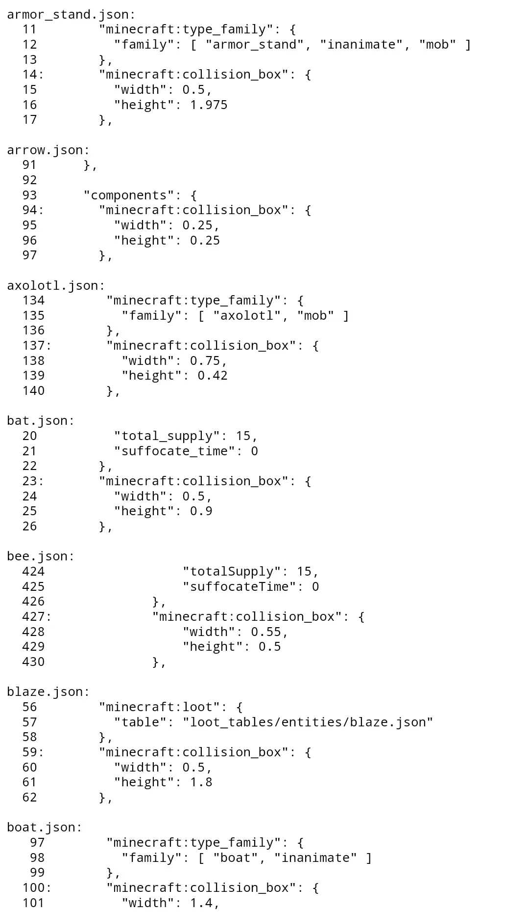
其他检查：除了生成空间检查以外，还有检测生物脚下方块的烧伤检测（主要是检查是否有岩浆块）。史莱姆有生成位置的检查，因此只能在y40以下生成。岩浆怪有实体和液体的检查，不能与实体、水和岩浆接触。幻翼会检查玩家最近几天的睡眠质量和头上有没有方块。部分生物会检查脚下的方块是否正确（比如哞菇会检查脚下是不是菌丝）。哞菇会对天空光检查，如果小于12则不会生成。猪灵、僵尸猪灵还会检查是否与非固体方块的碰撞箱接触。还有一个几乎没什么用的亮度检测等。
小僵尸和小动物：小僵尸有很多变种，和小动物小动物一样，这些都不是单独的生物，可认为仅在最后阶段低概率替换生成。大僵尸无法生成的地方小僵尸也无法生成。基岩版不会生成鸡骑士，但会生成可骑乘其他生物的小僵尸。
沼泽群系的史莱姆：沼泽群系史莱姆有两种，一种在史莱姆区块中不高于39的地方生成，不受月相影响，另一种没有坐标限制，受月相影响。这二者虽然都是史莱姆但是可认为是两个生物，因为有各自的权重。常见的史莱姆因为位置的限制，只能生成在低于y40的史莱姆区块中，但是这个毒瘤的权重不仅限于y40以下，也就是说在其他地方这玩意压根不能生成，但是它的权重稀释了其他生物生成的概率，也就变相拉低了生物农场的效率。而另一种史莱姆因为月相的影响效率更低，mc有8个月相，从新月到满月，生成概率依次为0、0.25、0.5、0.75、1，月亮越满概率越高。当这一项通过后，还会检查亮度，如果大于7则不生成。因此基岩版农场做在沼泽是极不划算的，史莱姆农场效率会下降50%，史莱姆还会对于其他生物农场造成双倍影响。
幻翼：玩家长时间没有睡觉就有概率生成幻翼，如果玩家头上有方块则不会生成。幻翼不是凭空生成的，同样是基于生成尝试，当选择幻翼生成后，会再从玩家头上随机选择一个位置进行生成。
鱼类：鱼类的生成与幻翼类似，当水深超过一格时，会从生成点往上寻找水面，然后从水下第二格开始生成，一般生成2到3群，深度不会超过第六格，总数不会超过成群的数量极限。如果水恰好只有一层则不会这么费劲而是直接生成。
写后记的时候正式版已经出到了1.17.11，鸽王大概就是我罢。这篇文章对我来说，是过去有关生成知识的全面总结，其中也包含了不少与巨佬讨论的结晶，哦这么说就有点be生电圈文化遗产的味道了（。
基岩版的生成机制具有很大的局限性，有对于卡顿的妥协，有机制上的漏洞，有其他种种不合理的地方，但是这又怎么样呢，我还是相信人定胜天，相信总有更强大的玩家能推动科技树发展，相信我已经为这位玩家铺上了一块砖。